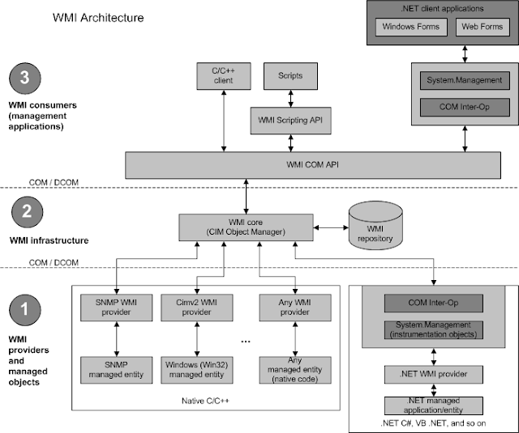

# WMI - Windows Management Instrumentation
From MSDN:
Windows Management Instrumentation (WMI) is the infrastructure for management data and operations on Windows-based operating systems.In short, WMI allows you to collect information about local and remote computers.
You can also execute commands.
Links• About
◇
https://blog.ropnop.com/using-credentials-to-own-windows-boxes-part-3-wmi-and-winrm/• Pwn
◇
https://www.youtube.com/watch?v=0SjMgnGwpq8 ▪ - BlackHat 2015 - Abusing Windows Management Instrumentation (WMI)
◇
There’s Something About WMI - Sans DFIR 2015
## About
WMI allows for querying and administration of local and remote Windows devices.
Think of it like SNMP for Windows infrastructure.
You manage your Windows network through WMI.
• Been around since Win98 and NT4
• It's a SysAdmin tool " to obtain management data from remote computers"
• WMI connections are made via
◇ Port 135 - DCOM
• Can be used to
◇ Obtain system information
▪ registry
▪ file system
▪ etc.
◇ Execute commands
◇ Subscribe to events
▪ e.g. subscribe to writes to a log file
### Architecture
• WMI Objects are stored
◇ in the WMI repository -
%SystemRoot%\System32\wbem\Repository\OBJECTS.DATA• WMI Settings are stored
◇ in the registry -
HKEY_LOCAL_MACHINE\SOFTWARE\Microsoft\WBEM ◇ via the Win32_WMI class instance -
Win32_WmiSetting class
▪ no idea what this means
### Interacting with WMI
• PowerShell
◇
Get-Command -Noun Wmi* - WMI cmdlets available since Win98/NT4
◇
Get-Command -Noun Cim* - CIM cmdlets introduced in PowerShell version 3
▪ they do the same as the WMI cmdlets but talk to both protocols - DCOM (old OSs) and WinRM (most new OSs)
• wmic.exe
• winrm.exe
◇ If WinRM is listening but powershell is blocked, can use winrm.exe instead
• wbemtest.exe
◇ Crappy GUI interface
◇ Good if can't run wmic.exe or winrm.exe
• From Linux
◇ wmic
◇ wmis - wrapper for Win32 ProcessCreate method
◇ wmis-pth - modified version of wmis that accepts NTLM hashes
## Execute Commands
The WMI
win32_process class can be used to query, modify, terminate and create processes.
https://docs.microsoft.com/en-gb/windows/win32/cimwin32prov/win32-process?redirectedfrom=MSDN### Advantages
• No window gets opened on remote machine (so spawning calc.exe won't show up) - silent
• WMI command doesn't get logged by default
• Doesn't write to disk